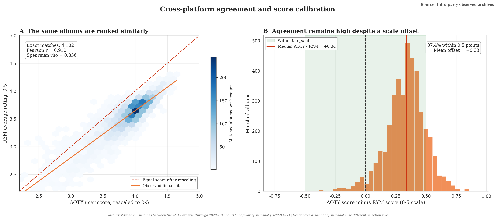
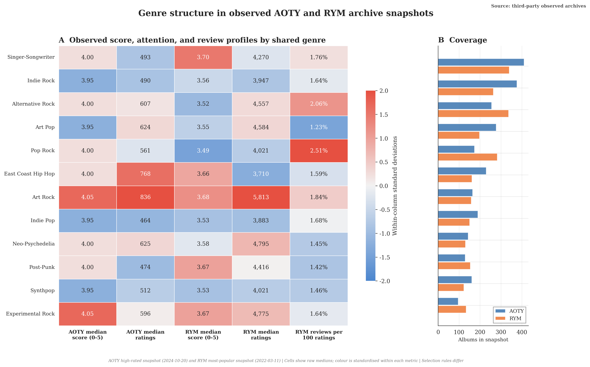

Computational social science · 2026
Trust and provenance in crowdsourced music knowledge
This reproducible study examines Rate Your Music and Album of the Year as institutions of crowdsourced music knowledge. It maps archive coverage, cross-platform rating agreement, participation structure, and the data needed to test change after 2022.
Cases Rate Your Music · Album of the Year
Empirical units 42,358 album rows
Archive dates 2020 · 2022 · 2024
Evidence design Observed · controlled · synthetic · scenario
Primary open test Post-2022 structural change
01 · Research framework
Content supply, provenance, and platform governance
The study considers how lower production costs for review-like prose may change the value of credible origin, accountable contributor histories, and transparent rules for weighting contributions.
Lower production costs can weaken effort-based signals and increase the value of origin, history, and rules.
01
Content productionLower production cost changes the supply of review-like text.
02
Contribution rulesWeighting and eligibility rules shape ranking inputs.
03
Governance operationsReview, disclosure, moderation, and appeals address different risks.
04
Information assetsProvenance, taxonomy, and moderation history complement scale.
02 · Evidence base
Archive coverage and analytical scope
Three documented third-party archives support cross-platform, attention, genre, and text analyses. Their structures lack repeated rating timestamps, leaving a post-2022 break unidentified.
03 · Selected findings
Cross-platform agreement and participation structure
These are descriptive findings inside selected cross-sections. Each visual carries its evidence class and a source note directly on the figure.
Observed archive
Shared rank order, different score calibration
Across 4,102 exact artist–title–year matches, AOTY and RYM user scores correlate at r = 0.910. After rescaling, 87.4% lie within half a point, while the median AOTY score is 0.34 points higher. C01

Observed archive
Attention concentrates; written participation stays thin
The AOTY top-5,000 file has a rating-count Gini of 0.617; the selected RYM file has a Gini of 0.400. In the RYM snapshot, the median review-to-rating ratio is 1.65%. C02

Current limits and next dataset
These boundaries define the scope of the present study.
01
Causal timing
The cross-sectional archives cannot estimate the effect of generative systems on platform outcomes.
02
Content prevalence
The controlled text comparison uses a small constructed sample and provides no platform-level prevalence estimate.
03
Trust scenarios
Trust, policy, and competitive-position outputs depend on declared parameters and analyst-coded inputs.
04
Longitudinal extension
A dated panel of repeated albums or users, rule changes, and documented exclusions would support a structural-change test.
Review the claim matrix
Each reported result is linked to its source class, permitted interpretation, and remaining uncertainty.
Versioned research object
Read, cite, or archive the work.
Version 1.0.0 · Published 16 August 2026 · Permanently archived by Zenodo.